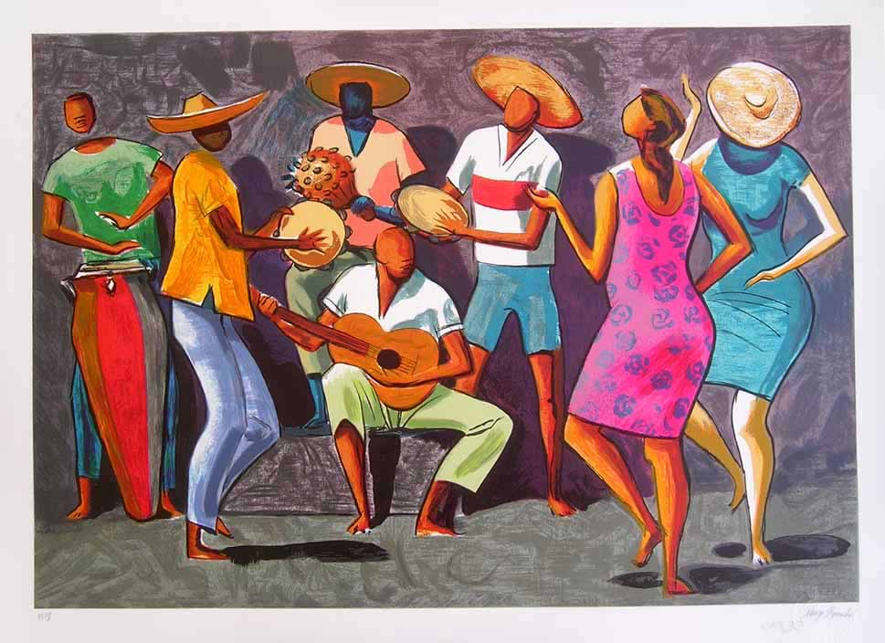
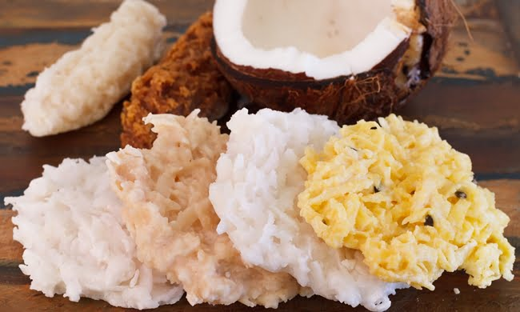
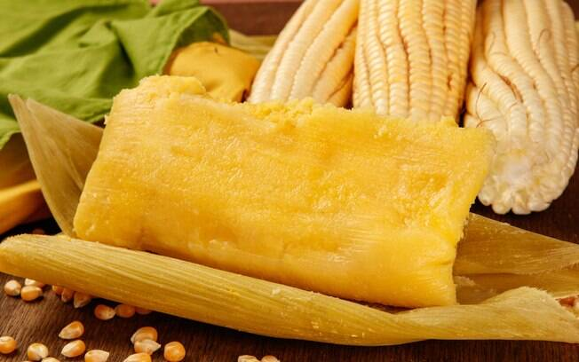

A Cultura Afrobrasileira
Inicio| Cultura Afrobrasileira| Personalidades Negras| Luta contra o Racismo|O que é Cultura Afro-Brasileira?
Cultura afro-brasileira é o conjunto de manifestações culturais predominantes no Brasil, formada a partir da junção de elementos da cultura dos povos africanos que foram trazidos como escravos para o país durante o período colonial. A cultura afro-brasileira é caracterizada e construída pela incorporação das expressões culturais dos africanos com outras tradições e culturas que formam a identidade brasileira, como a indígena e a europeia.
historia da Cultura Afro-Brasileira
Durante o Brasil Colonial, todo o tipo de manifestação cultural de origem africana era desestimulada e marginalizada na sociedade. Naquela época, os costumes e tradições dos povos africanos eram considerados primitivos e selvagens pelos europeus. Com o fim da escravidão no Brasil (1888), começa um lento processo de reinterpretação da cultura africana. Em meados do século XX, a elite brasileira começa a enxergar alguns aspectos culturais africanos como expressões artísticas legítimas e que representam a identidade nacional. Aproximadamente 40% de todos os negros que foram capturados de suas terras na África foram vendidos como escravos no Brasil. Devido a essa migração massiva, a presença da cultura africana ajudou a constituir a base dos atuais costumes e tradições dos brasileiros. A cultura afro-brasileira está presente em quase todas as formas que compõe a identidade cultural nacional, como a dança, música, culinária, religião, folclore, etc.
Caracteristicas da Cultura Afro-Brasileira
Musica e Dança na Cultura Afro-Brasileira
Esses são dois aspectos que tiveram grande influência da cultura africana. Com o tambor como base para os ritmos, muitos gêneros musicais e de dança se consolidaram no país, como o Maracatu, a Cavalhada, a Congada, a Capoeira, o Samba, entre outros.
Capoeira

Atualmente a capoeira é considerada um Patrimônio Cultural Imaterial da Humanidade, mas nem sempre foi assim. A capoeira foi proibida no Brasil durante muitos anos, tida como uma atividade de marginais. Apenas a partir da década de 1930 é que a prática passou a ser permitida no país, através de uma lei sancionada pelo presidente Getúlio Vargas. Originalmente, a capoeira tinha o propósito de servir como defesa pessoal dos escravos fugitivos. Ao acrescentar melodias enquanto executavam os movimentos, faziam de conta que se tratava de uma dança e podiam treinar dentro das senzalas sem levantar suspeitas.
Samba
Entre todos os gêneros musicais que foram herdados da cultura africana, o samba é o mais expressivo. É parte importante da identidade do povo brasileiro. O samba surgiu entre os escravos nas senzalas, onde os homens cantavam e tocavam instrumentos de percussão (tambores, por exemplo), enquanto as mulheres dançavam ao som do ritmo.
Culinaria Afro-Braasileira
Culinária na Cultura Afro-Brasileira A cultura africana também está fortemente representada nos pratos típicos nacionais, como o vatapá, a feijoada, o acarajé, a cocada, a pamonha, o sarapatel, etc. A culinária afro-brasileira usa de ingredientes trazidos pelos povos africanos e adapta algumas receitas tradicionais dos portugueses e indígenas, criando uma gastronomia própria e rica.
Alguns pratos tipicos da Culinaria Afro-Araasileira

Feijoada
a feijoada é também uma comida africana que ficou famosa praticamente por todo o Brasil. No entanto, a origem do prato é um pouco controversa. Há uma versão muito conhecida que diz que a feijoada surgiu nas senzalas, onde as pessoas escravizadas aproveitavam os pedaços de porco que os senhores jogavam fora, como pés, orelhas e rabo, e misturavam no feijão preto.
Quindim
O doce, originalmente português, se chamava Brisa-do-Lis e era feito com gemas e açúcar – um clássico da confeitaria conventual tão tradicional nos doces portugueses – além de amêndoas. No Brasil, as mulheres africanas não tinham este último ingrediente para prepará-lo para os seus senhores, então substituíram as amêndoas por coco ralado, que era mais comum. Assim criaram uma nova receita, que chamaram de quindim e que se tornou muito popular no Brasil.

Cocada
Os coqueiros eram muito abundantes na costa brasileira e, nas grandes fazendas de cana-de-açúcar, era comum ralar o coco e misturar com uma calda feita de açúcar, dando origem à cocada. O doce pode ser mais claro ou mais escuro e com a consistência mais seca ou mais cremosa, dependendo do ponto em que é retirado do fogo.

Pamonha
A pamonha que conhecemos atualmente surgiu como uma variação do chamado acaçá, que era um bolinho de milho enrolado em folhas verdes de bananeira e servido com vatapá ou caruru. Há versão de pamonhas salgadas ou doces, feitas à base de milho triturado e leite, enroladas na palha do próprio milho e cozidas na água fervente até ficarem com a consistência mais firme.
Angu
Essa comida africana era originalmente preparada como uma papa feita com inhame – que, no Brasil, foi substituído pelo fubá misturado com água. Uma comida africana extremamente simples, que era muito consumida por ser barata e por sustentar por bastante tempo. Às vezes serviam com miúdos de porco ou boi, o que ainda hoje caracteriza o “angu à baiana”, que é mais cremoso. Levado pelos colonizadores para a Europa, se popularizou no norte da Itália e voltou para as regiões brasileiras com colonização italiana, onde ficou mais conhecido como polenta.